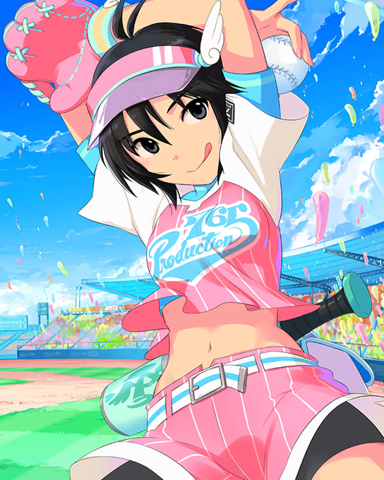

Makoto Kikuchi's Mini Fan Page!
A webpage about my favorite anime character, Makoto Kikuchi!
Makoto Kikuchi is from the Idolm@ster video games series, and anime "Idolm@ster".
Makoto grew up with a very tomboyish demeanor due to her father, so she became an idol to express and embrace her
feminine, girly side.
Makoto has a natural fear of insects to the point of hesitating to say the name of any insect she sees.
Her birthday is August 29th, making her a Virgo.
Makoto is voiced and sung by Hiromi Hirata.
June 17th, 2025
